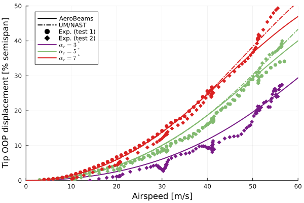
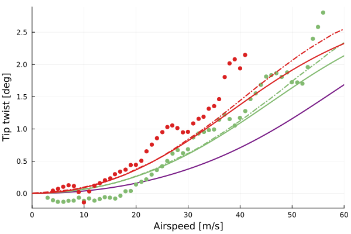
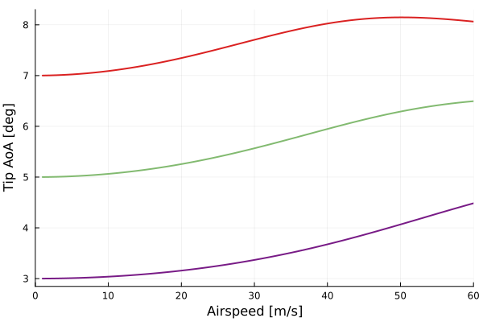
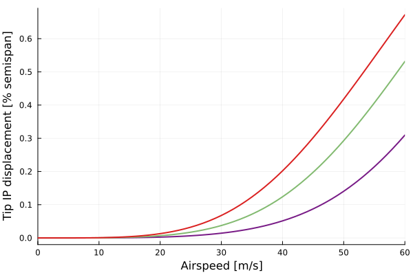
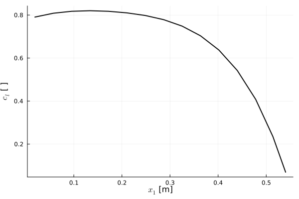
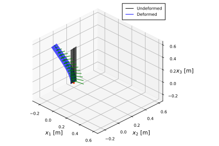

Steady aeroelastic analysis of the Pazy wing
This example illustrates how to set up a steady aeroelastic analysis, using the Technion's Pazy wing benchmark. The sectional properties of the wing's spar and the aerodynamic tip loss function were defined by Riso and Cesnik. The data is publicly available at https://github.com/UM-A2SRL/AePW3-LDWG.

Pazy wing in the wind tunnel by Avin et al.
The code for this example is available here.
Problem setup
Let's begin by setting the variables of our problem. In this example we will analyze the displacements and twist of the clamped wing under several combinations of root pitch angle and airspeed, which are defined by the arrays θRange and URange. The wing was tested with a balance mass of 0.01 kg attached to its tip store, at a position of 40 mm behind the trailing-edge. Notice that we bring into scope some fixed geometrical and discretization properties of the wing's beam through the function geometrical_properties_Pazy.
using AeroBeams, DelimitedFiles
# Aerodynamic solver
aeroSolver = QuasiSteady()
# Derivation method
derivationMethod = AD()
# Airfoil section
airfoil = deepcopy(flatPlate)
# Flag for upright position
upright = true
# Gravity
g = 0
# Flag for small angles approximation
smallAngles = true
# Fixed geometrical and discretization properties
nElem,L,chord,normSparPos = geometrical_properties_Pazy()
# Tip mass (for test 1, 0.01 kg, 40 mm behind the trailing-edge)
tipMass = 0.01
ηtipMass = [0; -chord*(1-normSparPos)-0.04; 0]
# Root angle (in degrees) and airspeed ranges
θRange = [3, 5, 7]
URange = collect(0:1:60)
# Initialize outputs
tip_OOP = Array{Float64}(undef,length(θRange),length(URange))
tip_IP = Array{Float64}(undef,length(θRange),length(URange))
tip_twist = Array{Float64}(undef,length(θRange),length(URange))
tip_AoA = Array{Float64}(undef,length(θRange),length(URange))Solving the problem
In the following loops, we create new model instances with the combination of pitch angle and airspeed, create and solve the steady problem, and then extract the outputs of interest. The model creation process is streamlined with the function create_Pazy, taking the appropriate inputs. Notice that the twist angle is computed as the arcsine of the difference in "height" between the leading edge and trailing edge of the wingtip (throught the rotation of the local basis vector pointing in the x2-direction).
# Sweep root angle
for (i,θ) in enumerate(θRange)
# Sweep airspeed
for (j,U) in enumerate(URange)
# Update model
PazyWingPitchRange,_ = create_Pazy(aeroSolver=aeroSolver,derivationMethod=derivationMethod,airfoil=airfoil,upright=upright,θ=θ*π/180,airspeed=U,g=g,tipMass=tipMass,ηtipMass=ηtipMass,smallAngles=smallAngles)
# Create and solve problem
global problem = create_SteadyProblem(model=PazyWingPitchRange)
solve!(problem)
# Get tip twist, AoA, IP and OOP displacement at beam reference line
tip_p = problem.nodalStatesOverσ[end][nElem].p_n2_b
R,_ = rotation_tensor_WM(tip_p)
Δ = R*[0; 1; 0]
tip_twist[i,j] = asind(Δ[3])
tip_OOP[i,j] = problem.nodalStatesOverσ[end][nElem].u_n2_b[3]
tip_IP[i,j] = -problem.nodalStatesOverσ[end][nElem].u_n2_b[2]
tip_AoA[i,j] = problem.model.elements[end].aero.flowAnglesAndRates.αₑ*180/π
end
endPost-processing
The post-processing begins by loading the reference data.
# Load reference data
tip_u3VsU_rootPitch5_Exp = readdlm(pkgdir(AeroBeams)*"/test/referenceData/Pazy/tip_u3VsU_rootPitch5_Exp.txt")
tip_u3VsU_rootPitch5_UMNAST = readdlm(pkgdir(AeroBeams)*"/test/referenceData/Pazy/tip_u3VsU_rootPitch5_UMNAST.txt")
tip_u3VsU_rootPitch7_Exp = readdlm(pkgdir(AeroBeams)*"/test/referenceData/Pazy/tip_u3VsU_rootPitch7_Exp.txt")
tip_u3VsU_rootPitch7_UMNAST = readdlm(pkgdir(AeroBeams)*"/test/referenceData/Pazy/tip_u3VsU_rootPitch7_UMNAST.txt")
tip_thetaVsU_rootPitch5_Exp = readdlm(pkgdir(AeroBeams)*"/test/referenceData/Pazy/tip_thetaVsU_rootPitch5_Exp.txt")
tip_thetaVsU_rootPitch5_UMNAST = readdlm(pkgdir(AeroBeams)*"/test/referenceData/Pazy/tip_thetaVsU_rootPitch5_UMNAST.txt")
tip_thetaVsU_rootPitch7_Exp = readdlm(pkgdir(AeroBeams)*"/test/referenceData/Pazy/tip_thetaVsU_rootPitch7_Exp.txt")
tip_thetaVsU_rootPitch7_UMNAST = readdlm(pkgdir(AeroBeams)*"/test/referenceData/Pazy/tip_thetaVsU_rootPitch7_UMNAST.txt")
tip_u3Vsq_rootPitch3_ExpTest1 = readdlm(pkgdir(AeroBeams)*"/test/referenceData/Pazy/tip_u3Vsq_rootPitch3_ExpTest1.txt")
tip_u3Vsq_rootPitch5_ExpTest1 = readdlm(pkgdir(AeroBeams)*"/test/referenceData/Pazy/tip_u3Vsq_rootPitch5_ExpTest1.txt")
tip_u3Vsq_rootPitch7_ExpTest1 = readdlm(pkgdir(AeroBeams)*"/test/referenceData/Pazy/tip_u3Vsq_rootPitch7_ExpTest1.txt")
ρTest2 = 2*1050/43^2 # Estimated air density for test 2, from Table 13 of Avin et al.'s paperWe can now plot the outputs as a function of airspeed for each of the root pitch angles. The following "experimental" results were taken from Figure 33 of the paper by Avin et al.. Note that the experimental twist angle was actually estimated by Riso and Cesnik using the diffence between the leading- and trailing-edge out-of-plane displacements of Avin et al.. The correlation with the experimental data and the reference numerical solution is very good.
using Plots, ColorSchemes
gr()
colors = get(colorschemes[:rainbow], LinRange(0, 1, length(θRange)))
# Tip OOP displacement vs. airspeed
plt1 = plot(xlabel="Airspeed [m/s]", ylabel="Tip OOP displacement [% semispan]", xlims=[URange[1],URange[end]], ylims=[0,50], legend=:topleft)
plot!([NaN], [NaN], c=:black, lw=2, ls=:solid, label="AeroBeams")
plot!([NaN], [NaN], c=:black, lw=2, ls=:dashdot, label="UM/NAST")
scatter!([NaN], [NaN], c=:black, ms=4, label="Exp. (test 1)")
scatter!([NaN], [NaN], c=:black, shape=:diamond, ms=4, label="Exp. (test 2)")
for (i,θ) in enumerate(θRange)
plot!(URange, tip_OOP[i,:]/L*100, c=colors[i], lw=2, ls=:solid, label=string("\$\\alpha_r=",round(Int,θ),"^\\circ\$"))
if θ==3
scatter!(sqrt.(2*tip_u3Vsq_rootPitch3_ExpTest1[1,:]/ρTest2), tip_u3Vsq_rootPitch3_ExpTest1[2,:]*100/L, mc=colors[i], shape=:diamond, ms=4, msw=0, label=false)
elseif θ==5
plot!(tip_u3VsU_rootPitch5_UMNAST[1,:], tip_u3VsU_rootPitch5_UMNAST[2,:], lw=2, ls=:dashdot, c=colors[i], label=false)
scatter!(tip_u3VsU_rootPitch5_Exp[1,:], tip_u3VsU_rootPitch5_Exp[2,:], mc=colors[i], ms=4, msw=0, label=false)
scatter!(sqrt.(2*tip_u3Vsq_rootPitch5_ExpTest1[1,:]/ρTest2), tip_u3Vsq_rootPitch5_ExpTest1[2,:]*100/L, mc=colors[i], shape=:diamond, ms=4, msw=0, label=false)
elseif θ==7
plot!(tip_u3VsU_rootPitch7_UMNAST[1,:], tip_u3VsU_rootPitch7_UMNAST[2,:], lw=2, ls=:dashdot, c=colors[i], label=false)
scatter!(tip_u3VsU_rootPitch7_Exp[1,:], tip_u3VsU_rootPitch7_Exp[2,:], mc=colors[i], ms=4, msw=0, label=false)
scatter!(sqrt.(2*tip_u3Vsq_rootPitch7_ExpTest1[1,:]/ρTest2), tip_u3Vsq_rootPitch7_ExpTest1[2,:]*100/L, mc=colors[i], shape=:diamond, ms=4, msw=0, label=false)
end
end
# Tip twist vs. airspeed
plt2 = plot(xlabel="Airspeed [m/s]", ylabel="Tip twist [deg]", xlims=[URange[1],URange[end]], legend=:topleft)
for (i,θ) in enumerate(θRange)
plot!(URange, tip_twist[i,:], c=colors[i], lw=2, label=false)
if θ==5
plot!(tip_thetaVsU_rootPitch5_UMNAST[1,:], tip_thetaVsU_rootPitch5_UMNAST[2,:], lw=2, ls=:dashdot, c=colors[i], label=false)
scatter!(tip_thetaVsU_rootPitch5_Exp[1,:], tip_thetaVsU_rootPitch5_Exp[2,:], mc=colors[i], ms=4, msw=0, label=false)
elseif θ==7
plot!(tip_thetaVsU_rootPitch7_UMNAST[1,:], tip_thetaVsU_rootPitch7_UMNAST[2,:], lw=2, ls=:dashdot, c=colors[i], label=false)
scatter!(tip_thetaVsU_rootPitch7_Exp[1,:], tip_thetaVsU_rootPitch7_Exp[2,:], mc=colors[i], ms=4, msw=0, label=false)
end
end
# Tip AoA vs. airspeed
plt3 = plot(xlabel="Airspeed [m/s]", ylabel="Tip AoA [deg]", xlims=[URange[1],URange[end]], legend=:bottomright)
for (i,θ) in enumerate(θRange)
plot!(URange, tip_AoA[i,:], c=colors[i], lw=2, label=false)
end
# Tip in-plane displacement vs. airspeed
plt4 = plot(xlabel="Airspeed [m/s]", ylabel="Tip IP displacement [% semispan]", xlims=[URange[1],URange[end]], legend=:topleft)
for (i,θ) in enumerate(θRange)
plot!(URange, tip_IP[i,:]/L*100, c=colors[i], lw=2, label=false)
end   
Let's leverage the built-in function plot_steady_outputs with the appropriate inputs to plot the lift coefficient over the span of the wing.
# Lift coefficient over span for the last problem (θ = θRange[end] and U = URange[end])
plot_steady_outputs(problem,outputs=["cl"],colorScheme=:grays,lw=2)
Finally, we can visualize the deformed state of the wing using the plot_steady_deformation with the appropriate arguments. Notice that by default, gravitational loads are plotted in yellow, and aerodynamic loads in green.
# Deformed state of last problem (θ = θRange[end] and U = URange[end])
deformationPlot = plot_steady_deformation(problem,view=(45,30),plotBCs=true,plotDistLoads=true)
This page was generated using Literate.jl.